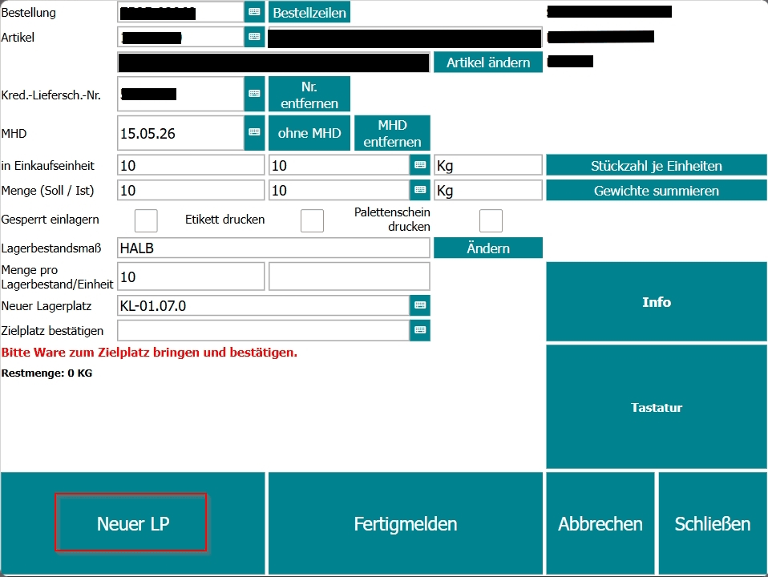
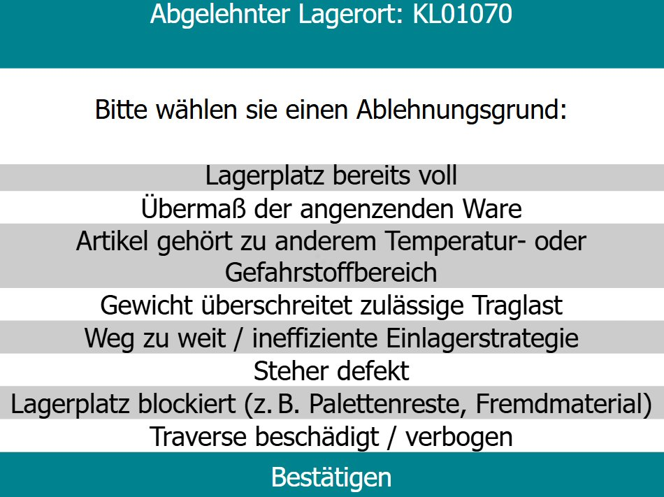
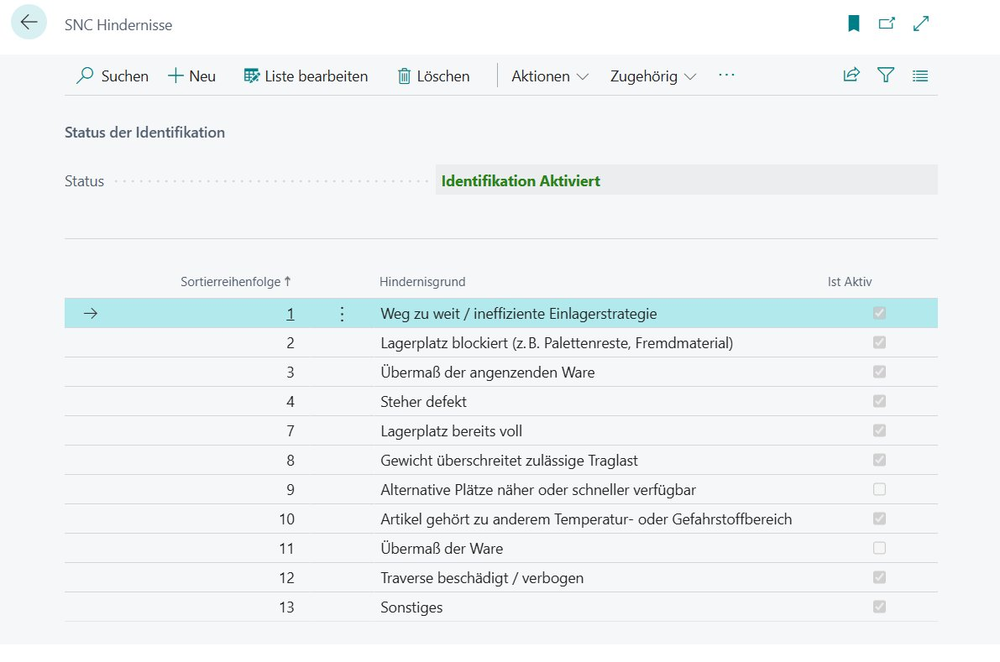
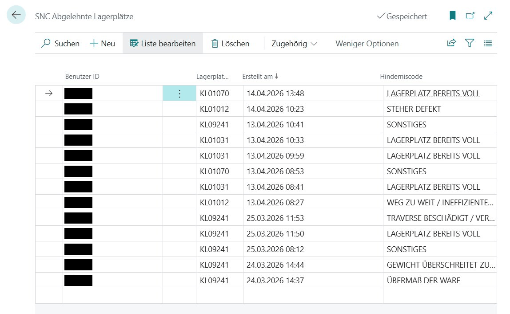
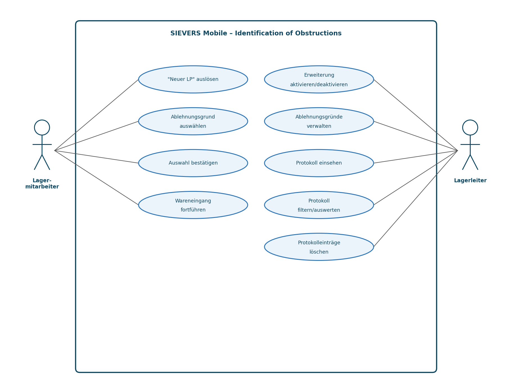
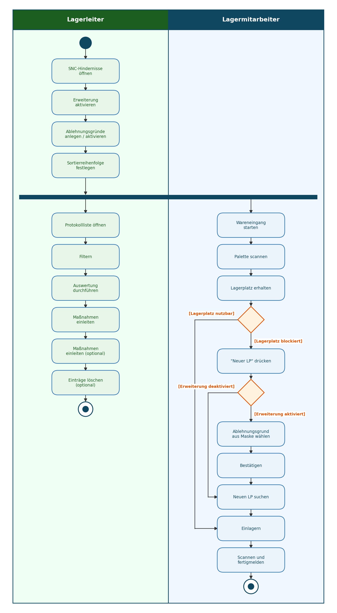

Abschlussprojekt · Fachinformatiker Anwendungsentwicklung
Im Lager weiß das System, welcher Lagerplatz frei ist. Es weiß nicht, dass davor eine Palette steht. Diese Erweiterung schließt genau diese Lücke — sie fragt im laufenden Wareneingang nach dem Grund, wenn ein Mitarbeiter den vorgeschlagenen Lagerplatz ablehnt, und macht daraus auswertbare Daten.
Entstanden als betriebliche Projektarbeit für die IHK-Abschlussprüfung — als Erweiterung für Microsoft Dynamics 365 Business Central und die App SIEVERS Mobile.
Ausgangslage
Zwölf Jahre operative Logistik haben mir dieses Problem gezeigt, bevor ich es programmieren konnte.
Ein Lagermitarbeiter scannt am Staplerterminal das Palettenlabel. Das System schlägt einen Lagerplatz vor. In der Theorie fährt er hin und lagert ein.
In der Praxis ist der Platz regelmäßig nicht nutzbar: eine beschädigte Traverse, ein blockierter Weg, eine Nachbarpalette mit Überbreite. Der Mitarbeiter lehnt den Vorschlag ab, sucht auf Sicht einen freien Platz und lagert dort ein. Der Prozess läuft weiter — aber der Grund verschwindet.
Damit bleibt derselbe problematische Lagerplatz im System weiterhin frei und wird der nächsten Schicht erneut vorgeschlagen. Das Problem vererbt sich, ohne je irgendwo aufzutauchen. Zwischen der systemischen Auslastung und der physischen Realität im Lager entsteht eine Lücke, die niemand beziffern kann.
Die Lösung
Von der Ablehnung am Terminal bis zur auswertbaren Liste für die Lagerleitung.




Technische Umsetzung
Die wichtigste Entscheidung war, den bestehenden Prozess nicht anzufassen.


Test
Der interessanteste Teil des Projekts war der Moment, in dem nichts passierte.
Implementierung fertig, Erweiterung aktiviert, „Neuer LP“ gedrückt — und die Maske erschien nicht. Kein Fehler, keine Meldung, einfach nichts.
Mit Breakpoints und zeilenweisem Durchlaufen im Debugger habe ich den Ausführungspfad zurückverfolgt und die Variablenwerte beobachtet. Das Ergebnis lag nicht in meinem Code: In der Verarbeitungskette wurde ein Flag bereits als „erledigt“ gesetzt, bevor überhaupt geprüft war, ob die zuständige Stelle erreicht ist. Meine Logik sah beim Eintritt nur noch „schon verarbeitet“ und stieg sofort wieder aus.
Aufgefallen war das vorher nie, weil bis dahin nichts hinter dieser Stelle kam. Erst meine Erweiterung stand dahinter. Der Fehler wurde behoben — Prüfung vor Flag statt Flag vor Prüfung — und das korrekte Verhalten anschließend erneut im Debugger bestätigt.
Ein Projekt, das nur den eigenen Code testet, hätte diesen Fehler nie gefunden.
Einordnung
Dauerhaft nicht nutzbare Lagerplätze könnten automatisch gesperrt werden, statt weiter vorgeschlagen zu werden.
Nicht nur abgelehnte, sondern auch erfolgreich genutzte Plätze erfassen — als Basis für eine Optimierung der Einlagerstrategie.
Oberfläche, Geschäftslogik und Datenhaltung sind getrennt. Beide Erweiterungen wären additiv möglich, ohne Bestehendes anzufassen.
Die gezeigten Screenshots stammen aus meiner Projektdokumentation und werden mit Zustimmung des Ausbildungsbetriebs verwendet. Quellcode, kundenbezogene Angaben, interne Kennzahlen und personenbezogene Daten sind nicht Bestandteil dieser Darstellung.
← zurück zur Startseite